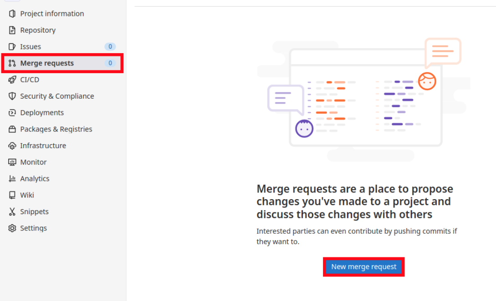
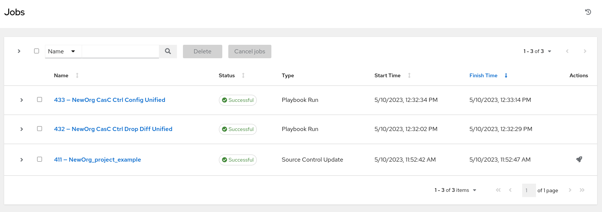
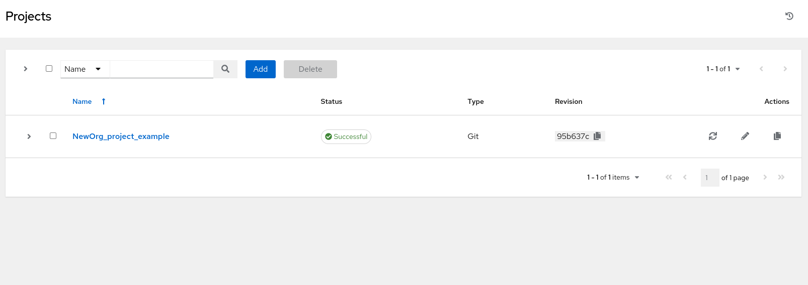
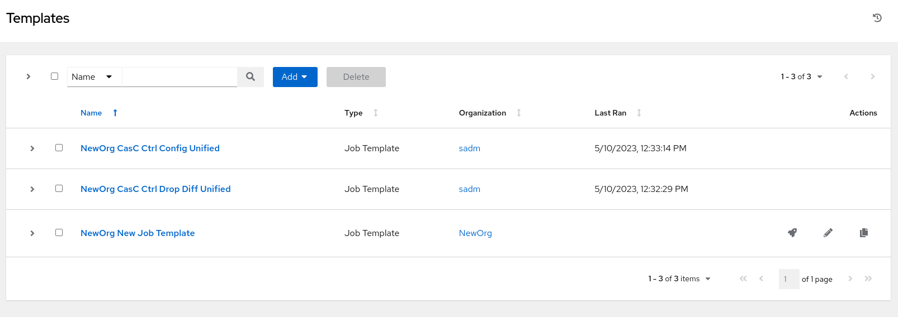
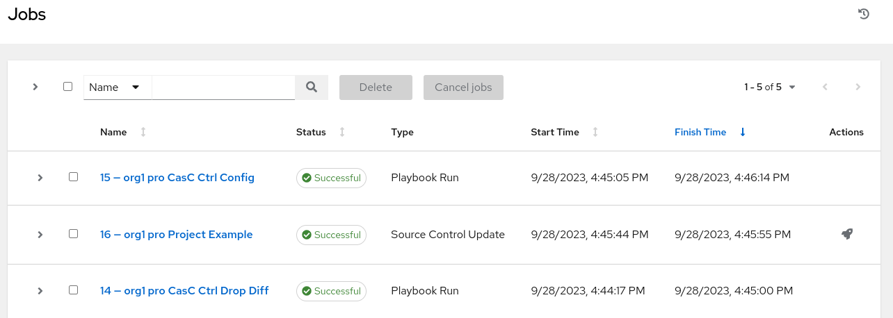
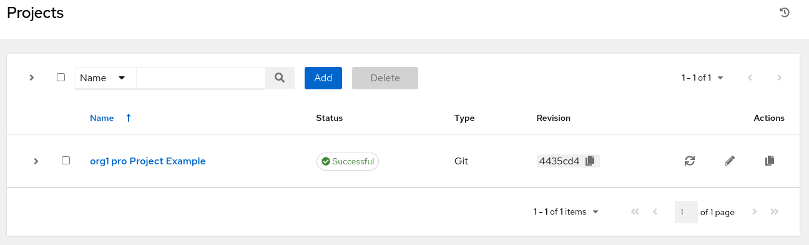
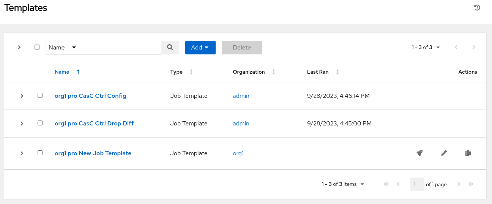

Push the changes to create the new objects through Merge Requests
1. Commit the changes to the new branch
git checkout dev
git pull
git checkout -b creation_new_objects
git add -A
git commit -m "Add new objects to the new org"
git push -u origin creation_new_objects2. Create and accept a Merge Request from creation_new_objects to dev
2.1. Create Merge Request
Create a Merge Request in Gitlab from creation_new_objects to dev branch:


2.2. Accept Merge Request
Approve the Merge Request in Gitlab to merge creation_new_objects into dev branch:

2.3. Check new objects in the Organization for the dev controller
|
The following examples will use the Ansible Automation Controller base URL |
2.3.1. Go to <CHANGE_ME>#/jobs and check that the jobs for CaC ${SUPERADMIN_ORG} CasC Ctrl Drop Diff and ${SUPERADMIN_ORG} CasC Ctrl Config finished successfully:

2.3.2. Go to <CHANGE_ME>#/projects and check that ${SUPERADMIN_ORG}_project_example was created:

2.3.3. Go to <CHANGE_ME>#/templates and check that ${SUPERADMIN_ORG} New Job Template was created:

3. Promote dev to pro through a Merge Request

3.3. Check new objects in the Organization for the pro controller
|
The following examples will use the Ansible Automation Controller base URL |
3.3.1. Go to <CHANGE_ME>#/jobs and check that the jobs for CaC ${SUPERADMIN_ORG} CasC Ctrl Drop Diff and ${SUPERADMIN_ORG} CasC Ctrl Config finished successfully:

3.3.2. Go to <CHANGE_ME>#/projects and check that ${SUPERADMIN_ORG}_project_example was created:

3.3.3. Go to <CHANGE_ME>#/templates and check that ${SUPERADMIN_ORG} New Job Template was created:
